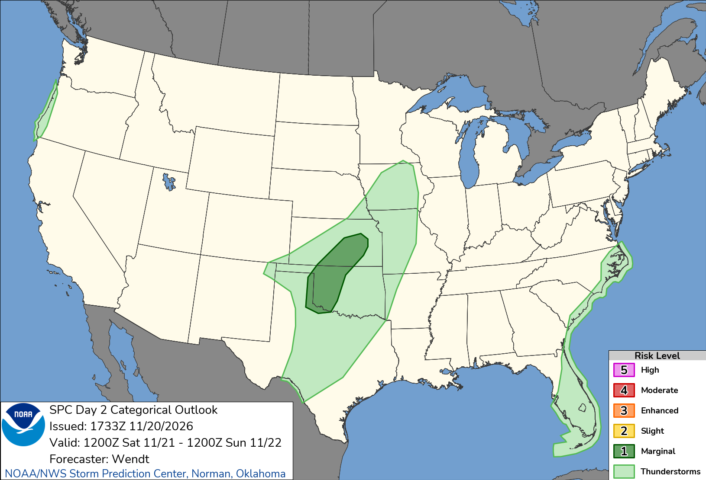

WEATHER INTEL · SPEC OPSFETCHED NOV 25, 2026 · 5:09 AM EDT
Weather Intel Mitten Mafia Fields
Jeremy Balabon · field ops brief · 43.0752N, -83.7663W
Mitten Mafia Fields, MI · Genesee County (Mount Morris Twp)NWS DTX grid 39,66Zone MIZ061Obs KFNTRadar KDTX
NOW · KFNT OBSERVED
21°F
Partly Cloudy · wind ENE 5 mph · dewpt 18°F · obs 4:20 AM ET
ALERTS CLEAR
0
Active NWS alerts for zone MIZ061
48H PEAK RAIN WATCH
98%
Thu 7 PM · Light Rain
ACTIVE ALERTS · NWS
CLEAR
NONE
No active NWS watches, warnings or advisoriesChecked api.weather.gov/alerts/active for point 43.0752,-83.7663 (zone MIZ061) at 5:09 AM ET.
CLEAR
BOTTOM LINE · OPERATIONAL IMPACTS, NEXT 48H+
RAIN
Rain windows ≥30%: Fri 4 AM, Thu 5 PMPeak 98% at Thu 7 PM. Amounts < 0.1 in. Protect open panels/terminations and stored gear.
WATCH
WIND
Gusts to 32 mph (Thanksgiving Day)Sustained up to 17 mph NE. Secure ladders, sheet goods and roof-top work; high-profile vehicles fine below ~40 mph.
WATCH
HEAT
Unseasonably warm: 42°F peak (Wed 2 PM)Dewpoints ~18°F. Hydrate in attics/mech rooms and lifts.
NOTE
TEMP DROP
48h low 24°F · 7-day low 21°F (Overnight)Frost/freeze-level lows in the 7-day. Watch freeze-sensitive equipment, outdoor startups, coil freeze stats.
PLAN
TRAVEL
No hazardous weather expected (HWO)Roads: wet pavement only during rain windows above.
CLEAR
HAZARDOUS WX OUTLOOK
NONE
Today/Tonight: No hazardous weather is expected at this time. Days 2–7: No hazardous weather is expected at this time. HWO DTX · 349 AM EST Wed Nov 25 2026
48H RANGE
High 42°F Wed 2 PM · Low 24°F Wed 5 AM Max sustained wind 17 mph NE (Thu 5 PM) Max gust 32 mph (Thanksgiving Day)
WEATHER INTEL · MITTEN MAFIA FIELDS, MI · SOURCE NWS / SPC01 / 07
WEATHER INTEL · SPEC OPSFETCHED NOV 25, 2026 · 5:09 AM EDT
Scheduled Ops
Calendar events matched to Mitten Mafia Fields · forecast for each event window
SCHEDULED OPS · NEXT 14 DAYS
NONE
No upcoming calendar events match this locationMatched on: mitten mafia, carpenter (title / location / address)
14 DAYS
Flags: precip ≥40%, thunderstorms, sustained wind ≥20 mph, gusts ≥30 mph, temp ≤35°F or ≥88°F, any active NWS alert. Only title, time and location are shown.
WEATHER INTEL · MITTEN MAFIA FIELDS, MI · SOURCE NWS / SPC02 / 07
WEATHER INTEL · SPEC OPSFETCHED NOV 25, 2026 · 5:09 AM EDT
Current Conditions
KFNT · Flint, Bishop International Airport · observed 4:20 AM ET
TEMP
21°F
Dewpoint 18°F · RH 86%
WIND
5mph
From ENE (60°) · gust none reported
VISIBILITY
10mi
Partly Cloudy · pressure 30.58 inHg
DTX KEY MESSAGES · AFD 230 AM EST Wed Nov 25 2026
KEY
Dry and seasonable conditions today.
NWS DTX
KEY
Widespread rain develops Thanksgiving afternoon and continues into Friday.
NWS DTX
KEY
Another round of rain likely to end the weekend.
NWS DTX
CLIMATE NOTE
NOTE
Strengthening high pressure exiting the northern Great Lakes and building into southern Quebec (~1045 mb) will provide one more dry day today, though easterly winds will be on the increase. Local probabilistic guidance suggests gusts of 25 to 30 mph in the afternoon, with daytime highs remaining near seasonal norms in the low to mid 40s. A strong upper-level wave and PV anomaly descending south through the eastern Plains will merge with the upper-level wave over the western Gulf Coast states, leading to an anomalously deep upper- level trough over the Gulf and Gulf Coast states as the trough axis becomes negatively tilted. Differential cyclonic vorticity advection (DCVA) and strong diffluence aloft ahead of the negatively tilted axis will support robust surface cyclogenesis and a tightening baroclinic zone oriented roughly southwest-to-northeast across the Ohio Valley and lower Great Lakes. An anomalously strong meridional moisture transport plume develops in response to the amplified ridge- trough couplet. Deep tropical and subtropical moisture sourced from both the western Atlantic and the Caribbean Sea is drawn northwestward into the system's warm conveyor belt (WCB). Elevated equivalent potential temperature (theta-e) air and precipitable water (PWAT) values surging well above seasonal climatology will ride up the sloped frontal and isentropic surfaces over Southeast Michigan. Strong low-level jet (LLJ) convergence and deep isentropic ascent favor a broad shield of rain overspreading the CWA by Thursday afternoon into Thursday night, with periods of moderate to potentially locally heavy rain where frontogenetic banding and WCB moisture flux maximize. Total rainfall looks to approach 1 inch across most locations in Southeast Michigan. Euro ensembles even showing a 70 percent chance of 24-hour precipitation amounts reaching at or above 1 inch across the eastern third of the CWA. This rainfall will wipe out much of the extreme rainfall deficit for the month of November, as rainfall totals thus far are only 0.18 inches at Detroit and 0.33 inches at Flint, far below the normal value near 2 inches. Thermal profiles on Thursday are comfortably warm enough to keep precipitation all rain, with daytime highs in the low to mid 40s. As the surface low deepens and tracks northeastward toward the eastern Great Lakes and Saint Lawrence Valley by late Thursday night into Friday, wrap-around cold advection on the back side of the system will cool the column. A transition or brief mix with wet snow remains possible early Friday morning, though marginal surface and boundary-layer temperatures alongside wet ground conditions should limit any accumulation if a changeover even occurs, which looks doubtful as surface dewpoints on Friday look to remain in the mid to upper 30s. Gusty winds are also expected Thursday into Friday as the pressure gradient tightens around the departing cyclone. The strength of the low-level jet and pressure gradient on Thursday suggests easterly wind gusts reaching around 35 mph, while northwest winds on the back side Friday should come in a bit lower due to the lack of strong cold advection. By Saturday, the extreme amplification relaxes as the upper-level trough deamplifies and translates eastward, leaving a cooler, more zonal to weakly cyclonic flow regime across the Great Lakes. Renewed amplification/merger with a strong upper level wave coming out of the Rockies will bring another good shot of appreciable rainfall by the end of the weekend, as low pressure tracks through the Eastern Ohio Valley. A changeover to snow at the tail end Sunday night is not out of the question with the favorable night timing and slightly colder thermal profiles compared to the Thanksgiving storm. && .MARINE... Influence of high pressure decreases today allowing the gradient to tighten, particularly over the southern Great Lakes, leading to an uptick in wind towards 20-25kts for all waters save for northern/north-central Lake Huron. This strengthening onshore flow will bring higher wave action into the Thumb and MI Erie nearshore waters by evening warranting the need for Small Craft Advisories tonight into Thursday. Strong low pressure then lifts out of the Carolinas towards the eastern Great Lakes Thursday-Friday further tightening the local gradient and bringing widespread rain. East to northeasterly gales become possible by Thursday afternoon across Lakes Erie and St Clair with lower but still noteworthy chances (~30- 40%) over the southern Lake Huron basin. As such, Gale Watches have been issued for the southern Great Lakes latter half of the day Thursday into the overnight period. Low pressure gradually peels away from the region over the course of Friday tapering of precip as well as backing winds to the northwest whilst allowing strengths to drop into the 25-30kt range instead. && .PREV DISCUSSION... Issued at 637 PM EST Tue Nov 24 2026 AVIATION... The center of broad surface high pressure extends from the Midwest into Lower Mi this evening, and then shifts northward late tonight and Wednesday morning. This brings wind around to an easterly direction across Lake Erie and southern Lake Huron which carries increasing coverage of stratus into Lower Mi. Observations this evening indicate a large area of lake clouds already activated with ceiling around the 3000 ft MVFR/VFR threshold from eastern Lake Huron into central Lake Erie. These clouds are in favorable position to move into Lower Mi as the wind shift develops and increases speed during the late night, first reaching the DTW corridor toward sunrise and spreading north/west toward PTK, FNT, and MBS not long after. The predictability challenge lies in MVFR coverage and duration at onset, then timing of ceiling improvement into VFR as daytime boundary layer growth increases during the morning. This time of year that usually takes until early afternoon, especially toward MBS where clouds linger. Wind gaining gusts near 20 kts pulls dry air in from the central Appalachians which promotes decreasing clouds toward DTW by late morning through Wednesday evening. DTW THRESHOLD PROBABILITIES... * Medium for ceiling at or below 5000 feet from 08-14Z Wednesday. && .DTX WATCHES/WARNINGS/ADVISORIES... MI...None. Lake Huron...Gale Watch from Thursday afternoon through late Thursday night for LHZ421-422. Small Craft Advisory from 7 PM this evening to 7 PM EST Thursday for LHZ441>443. Lake St Clair...Gale Watch from Thursday afternoon through Thursday evening for LCZ460. Michigan waters of Lake Erie...Small Craft Advisory from 1 PM this afternoon to 10 AM EST Thursday for LEZ444. Gale Watch from Thursday morning through Thursday evening for LEZ444. && $$ DISCUSSION...SF MARINE.......KDK AVIATION.....BT You can obtain your latest National Weather Service forecasts online at www.weather.gov/detroit.
RADARKDTX LATEST SWEEP
NWS RIDGE
WEATHER INTEL · MITTEN MAFIA FIELDS, MI · SOURCE NWS / SPC03 / 07
WEATHER INTEL · SPEC OPSFETCHED NOV 25, 2026 · 5:09 AM EDT
Daily Outlook
Next 36 hours · NWS hourly forecast + gridpoint gusts · ET
Mostly cloudy. Low around 21, with temperatures rising to around 24 overnight. East wind around 3 mph.
Wednesday
42°F
Partly sunny, with a high near 42. East northeast wind 3 to 12 mph, with gusts as high as 22 mph.
Wednesday Night
30°F
Partly cloudy. Low around 30, with temperatures rising to around 34 overnight. East northeast wind around 9 mph, with gusts as high as 20 mph.
Thanksgiving Day
43°F
A chance of rain after 2pm. Cloudy, with a high near 43. East northeast wind 9 to 17 mph, with gusts as high as 32 mph. Chance of precipitation is 30%. New rainfall amounts less than a tenth of an inch possible.
Thursday Night
36°F
Rain. Cloudy, with a low around 36. Northeast wind 13 to 17 mph, with gusts as high as 32 mph. Chance of precipitation is 100%. New rainfall amounts between a quarter and half of an inch possible.
Friday
43°F
Rain. Cloudy, with a high near 43. Chance of precipitation is 90%.
Friday Night
33°F
A chance of rain before 7pm. Mostly cloudy, with a low around 33.
Saturday
47°F
Partly sunny, with a high near 47.
Saturday Night
35°F
Mostly cloudy, with a low around 35.
Sunday
47°F
Rain likely after 7am. Mostly cloudy, with a high near 47.
Sunday Night
36°F
Rain likely. Mostly cloudy, with a low around 36.
Monday
45°F
A chance of rain before 7am. Partly sunny, with a high near 45.
Monday Night
31°F
Mostly cloudy, with a low around 31.
Tuesday
45°F
Partly sunny, with a high near 45.
WEATHER INTEL · MITTEN MAFIA FIELDS, MI · SOURCE NWS / SPC05 / 07
WEATHER INTEL · SPEC OPSFETCHED NOV 25, 2026 · 5:09 AM EDT
Radar & SPC
KDTX reflectivity · SPC convective outlooks
RADARKDTX LOOPLATEST
FETCHED 5:09 AM ET
SPCDAY 1
SPCDAY 2

WEATHER INTEL · MITTEN MAFIA FIELDS, MI · SOURCE NWS / SPC06 / 07
WEATHER INTEL · SPEC OPSFETCHED NOV 25, 2026 · 5:09 AM EDT
Forecast Discussion
NWS Detroit/Pontiac · 230 AM EST Wed Nov 25 2026
- Dry and seasonable conditions today.
- Widespread rain develops Thanksgiving afternoon and continues into
Friday.
- Another round of rain likely to end the weekend.
&&
.DISCUSSION...
Strengthening high pressure exiting the northern Great Lakes and
building into southern Quebec (~1045 mb) will provide one more dry
day today, though easterly winds will be on the increase. Local
probabilistic guidance suggests gusts of 25 to 30 mph in the
afternoon, with daytime highs remaining near seasonal norms in the
low to mid 40s.
A strong upper-level wave and PV anomaly descending south through
the eastern Plains will merge with the upper-level wave over the
western Gulf Coast states, leading to an anomalously deep upper-
level trough over the Gulf and Gulf Coast states as the trough axis
becomes negatively tilted. Differential cyclonic vorticity advection
(DCVA) and strong diffluence aloft ahead of the negatively tilted
axis will support robust surface cyclogenesis and a tightening
baroclinic zone oriented roughly southwest-to-northeast across the
Ohio Valley and lower Great Lakes. An anomalously strong meridional
moisture transport plume develops in response to the amplified ridge-
trough couplet. Deep tropical and subtropical moisture sourced from
both the western Atlantic and the Caribbean Sea is drawn
northwestward into the system's warm conveyor belt (WCB). Elevated
equivalent potential temperature (theta-e) air and precipitable
water (PWAT) values surging well above seasonal climatology will
ride up the sloped frontal and isentropic surfaces over Southeast
Michigan. Strong low-level jet (LLJ) convergence and deep isentropic
ascent favor a broad shield of rain overspreading the CWA by
Thursday afternoon into Thursday night, with periods of moderate to
potentially locally heavy rain where frontogenetic banding and WCB
moisture flux maximize. Total rainfall looks to approach 1 inch
across most locations in Southeast Michigan. Euro ensembles even
showing a 70 percent chance of 24-hour precipitation amounts
reaching at or above 1 inch across the eastern third of the CWA.
This rainfall will wipe out much of the extreme rainfall deficit for
the month of November, as rainfall totals thus far are only 0.18
inches at Detroit and 0.33 inches at Flint, far below the normal
value near 2 inches.
Thermal profiles on Thursday are comfortably warm enough to keep
precipitation all rain, with daytime highs in the low to mid 40s.
As the surface low deepens and tracks northeastward toward the
eastern Great Lakes and Saint Lawrence Valley by late Thursday night
into Friday, wrap-around cold advection on the back side of the
system will cool the column. A transition or brief mix with wet snow
remains possible early Friday morning, though marginal surface and
boundary-layer temperatures alongside wet ground conditions should
limit any accumulation if a changeover even occurs, which looks
doubtful as surface dewpoints on Friday look to remain in the mid to
upper 30s.
Gusty winds are also expected Thursday into Friday as the pressure
gradient tightens around the departing cyclone. The strength of the
low-level jet and pressure gradient on Thursday suggests easterly
wind gusts reaching around 35 mph, while northwest winds on the back
side Friday should come in a bit lower due to the lack of strong
cold advection.
By Saturday, the extreme amplification relaxes as the upper-level
trough deamplifies and translates eastward, leaving a cooler, more
zonal to weakly cyclonic flow regime across the Great Lakes. Renewed
amplification/merger with a strong upper level wave coming out of
the Rockies will bring another good shot of appreciable rainfall by
the end of the weekend, as low pressure tracks through the Eastern
Ohio Valley. A changeover to snow at the tail end Sunday night is
not out of the question with the favorable night timing and slightly
colder thermal profiles compared to the Thanksgiving storm.
&&
.MARINE...
Influence of high pressure decreases today allowing the gradient to
tighten, particularly over the southern Great Lakes, leading to an
uptick in wind towards 20-25kts for all waters save for
northern/north-central Lake Huron. This strengthening onshore flow
will bring higher wave action into the Thumb and MI Erie nearshore
waters by evening warranting the need for Small Craft Advisories
tonight into Thursday. Strong low pressure then lifts out of the
Carolinas towards the eastern Great Lakes Thursday-Friday further
tightening the local gradient and bringing widespread rain. East to
northeasterly gales become possible by Thursday afternoon across
Lakes Erie and St Clair with lower but still noteworthy chances (~30-
40%) over the southern Lake Huron basin. As such, Gale Watches have
been issued for the southern Great Lakes latter half of the day
Thursday into the overnight period. Low pressure gradually peels
away from the region over the course of Friday tapering of precip as
well as backing winds to the northwest whilst allowing strengths to
drop into the 25-30kt range instead.
&&
WEATHER INTEL · MITTEN MAFIA FIELDS, MI · SOURCE NWS / SPC07 / 07